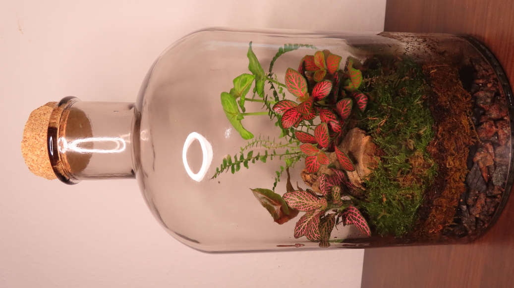
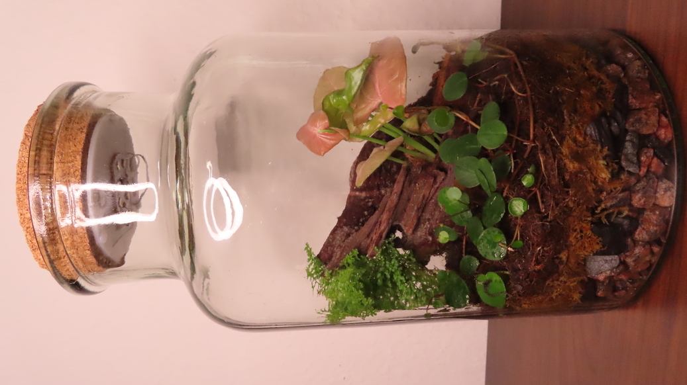
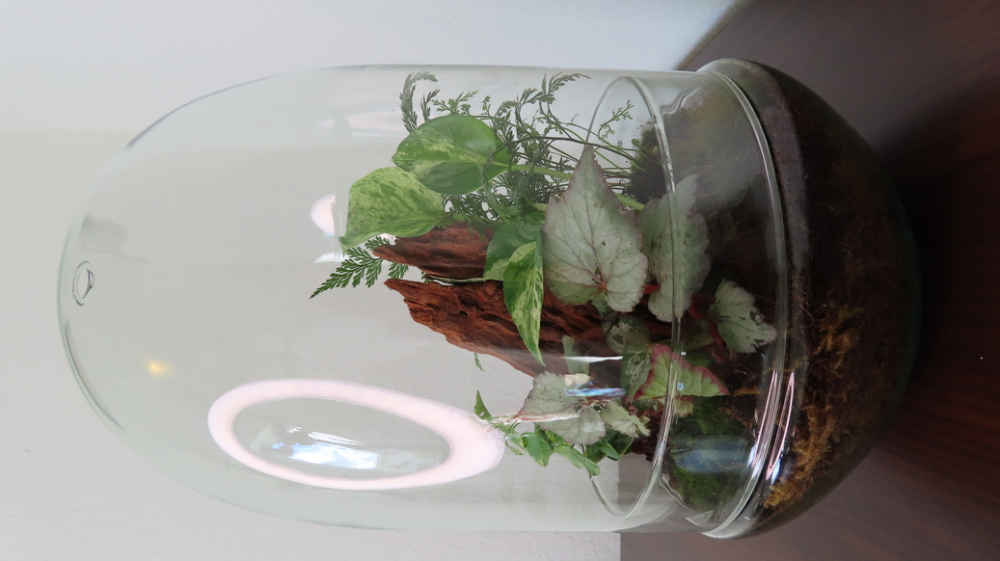
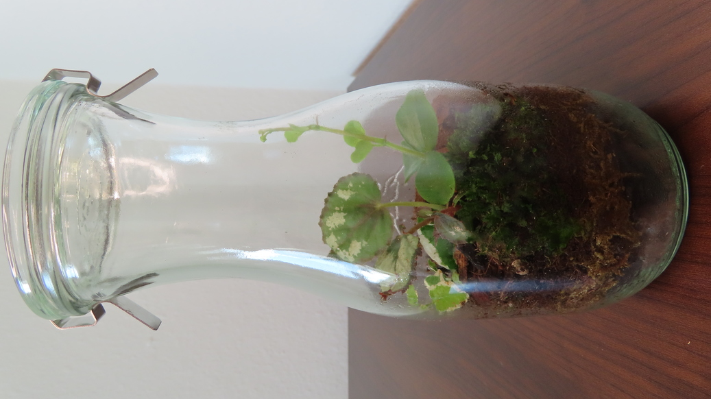

Available terraria

{kind=link}
No. 27. Price 525 DKK.
Plant terrarium in tinted apothecary with homemade cork lid. D=17 cm, H=32.
Click here for more details on Facebook.

{kind=link}
No. 26. Price 300 DKK. OBS! CHIPPED LID!.
Plant terrarium with cork lid and warm white LED light. D=15 cm, H=25,5 cm.
Click here for more details on Facebook.

{kind=link}
No. 23. Price 550 DKK.
Plant terrarium in egg-shaped glass. D=18 cm, H=30 cm.
Click here for more details on Facebook.

No. 15. Price 270 DKK.
Plant terrarium with glass lid. L=17 cm, D=7 cm, H=23,5 cm.
Click here for more details on Facebook.

No. 14. Price 120 DKK.
Plant terrarium with homemade cork lid. D=5 cm, H=16,5 cm.
Click here for more details on Facebook.

No. 13. Price 110 DKK.
Plant terrarium with glass lid. D=6 cm, H=14 cm.
Click here for more details on Facebook.

{kind=link}
No. 12. Price 130 DKK.
Plant terrarium with glass lid. D=6 cm, H=18 cm.
Click here for more details on Facebook.

No. 11. Price 220 DKK.
Plant terrarium with homemade cork lid. D=9 cm, H=16 cm.
Click here for more details on Facebook.

No. 10. Price 250 DKK.
Plant terrarium with homemade cork lid. D=9 cm, H=20 cm.
Click here for more details on Facebook.